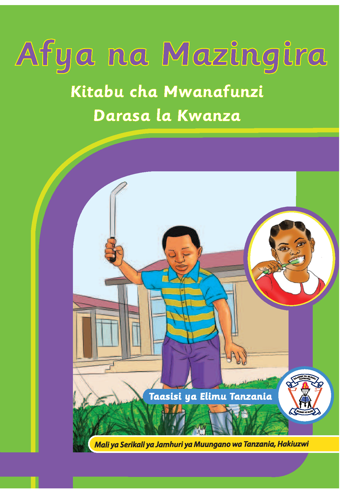

Jalada la mbele la kitabu cha Afya na Mazingira, Kitabu cha Mwanafunzi, Darasa la Kwanza. Lina rangi ya kijani na mapambo ya zambarau na njano. Katikati kuna picha ya mvulana aliyevaa viatu akikata majani kwa kutumia fyekeo. Upande wa kulia kuna picha ya msichana akipiga mswaki ndani ya duara. Chini kuna jina na nembo ya Taasisi ya Elimu Tanzania. Pia kuna maandishi yanayoeleza kuwa kitabu ni mali ya Serikali ya Jamhuri ya Muungano wa Tanzania na hakiuzwi.